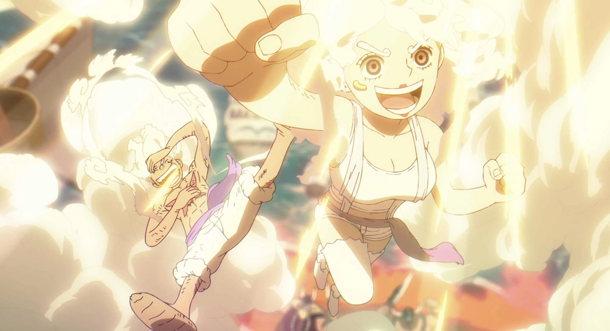

Latest News
Latest OnePiece Episode 1151 Released
The much-awaited episode 1151 has finally been released, bringing fans closer to the epic conclusion of the Egghead island arc. The episode sees a dramatic turning point when Jewelry Bonney awakens her powers under the influence of Monkey D. Luffy’s “Nika rhythm,” effectively transforming into a second “Nika-type”. That unexpected awakening becomes a surprise highlight of the episode. Meanwhile Emet, who’s been a background character during much of the arc, finally gets a major moment: he intervenes at a critical point, delivering a powerful punch on an enemy (Warcury), protecting the giant-ship and giving the protagonists a real chance to escape. Overall, the episode doesn’t just push forward plot — it expands lore and hooks up serious new dynamics. Many fans feel it could reshape major conflicts ahead(Awaits for next episode).
Upcoming OnePiece Episode 1152 Spoilers

The chapter is titled “A Horrible Day” Scopper Gaban reveals that the “Holy Knights” (or the powerful antagonists being fought) are not invincible, and that their weakness lies in the correct use of “Supreme King Haki” (Conqueror-style Haki). He also states there’s more than one person among the hero-side (the crew/allies) that can use this “Conqueror-type” Haki. While some think it might be another character (initially thought to be Sanji), Gaban reveals him referring to Roronoa Zoro. This reveals Zoro’s true potential and Haki capability. There is a flashback sequence to 14 years ago involving King Harald (ruler on Elbaf). In this flashback, it’s revealed that King Harald was betrayed — apparently stabbed by his own soldiers — after aligning with the world government. This indicates dark history and past betrayals that tie into current events. Also hinted: during that historical turmoil, a mysterious figure steals a legendary Devil Fruit. This stolen Devil Fruit could have major implications for the storyline ahead.